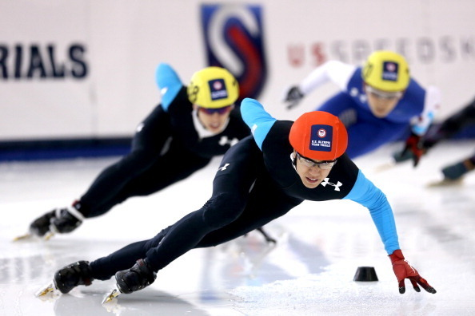

Alpine Skiing
Alpine skiing has been contested at every Winter Olympics since 1936 in Germany. This competition consists of a super-G course with downhill gates that is between 400-650 meters for men and 400-600 meters for women. The skiers have specific requirements for ski length and gear.
Biathlon
Biathlon combines the power and aggression of cross-country skiing with rifle shooting. The event consists of multple feats including sprint, pursuit, individual, mass start and relay. This is an exciting and complex event that is considered one of the most challenging sports.
Bobsleigh
Bobsleigh is a sport invented by the Swiss in the late 1860s in which teams make timed runs down a narrow and twisting course. Some specific rules of the contest include a track length of 1200-1300 metres in length, a track to accomodate vehicles so that speeds of 80-100mph can be attained in the first 250 metres and specific safety requirements.
Cross Country Skiing

Cross country skiing is the oldest type of skiing revolving around the activity of covering lots of flat terrain. This event was introduced into the Winter Games in 1924 and requires that each skier skiing a full six laps around the sprint course where the first team to cross the finish line wins.
Curling

Curling was included in the inaugural Winter Olympic Games in 1924. Athletes use a curling stone made of granite weighing between 38 and 44 pounds with the goal of placing your stone as close to the center button of the hosue as possble. Players vigorously sweep the ice in front of the stone to keep it moving.
Figure Skating

Figure skating was first contested in the Olympic Games in 1908 and since then the event has consisted of singles and doubles competitions for both men and women. This sport combines ice skating with dancing and gymnastics to create a beautiful and difficult routine.
Freestyle Skiing
Freestyle skiing combines speed, showmanship and the ability to perform aerial tricks while skiing. It made its debut in 1992 in France. The athletes must use a general slope, obey all signs and instructions, control their speed and direction and wear protective gear.
Ice Hockey
Ice hockey tournaments have been included in the Games since 1920 as a mens sport while women's competitions began in 1998. Twelve teams compete in the men's tournament while eight teams compete in the women's tournament. The competition is played in elimination style in a playoff system.
Luge
Luge made its debut in 1964 and takes place on the same track as bobsleigh. This is a men's and women's event where athletes must follow specific weight limits. The sport invovles athletes riding sleds down an icy track with steep banks and inclines and the fastest athletes to complete the track is the winner.
Nordic Combined
Nordic combined is an event that consists of cross-country skiing and ski jumping. This has been contested since 1924 and the sport originated in Norway. The winner is the best overall athlete as a result of both events.
Short Track Speed Skating

Short track speed skating has been contested at the Games since 1992. This event invovles skaters racing around a 111.12 meter oval track as fast as they can. There is no set rule to how many laps must be completed by each skater except for the fact that the minimum laps must be two.
Skeleton
Skeleton is considered a sliding sport where racers plummet head-first down a steep ice track on a sled. This sport was first competed at the 1928 Games but was discountinued for some time before it was reintroduced in 2002. Today, both men's and women's events are held.
Ski Jumping
Ski jumping involves athletes aiming to achieve the longest jump after descending from a specifically designed ramp. Jump length and competitor's style affect the score they receive. This sport has been a part of the Games since 1924.
Snowboard
Snowboarding made its debut in 1998 where 11 total events were inlcuded. These events consist of men's and women's halfpipe, giant slalom, slopestyle, big air and team snowboard cross that also includes a mixed team.
Speed Skating
Speed skating first appeared in the Games in 1924 where men initially were only allowed to competed. Since then, it has been contested at every winter games where women's competitions were introduced in 1960. Some rules are that skaters must changes lanes each lap, false starts are disqualifying and two skaters are allowed to run at a time.